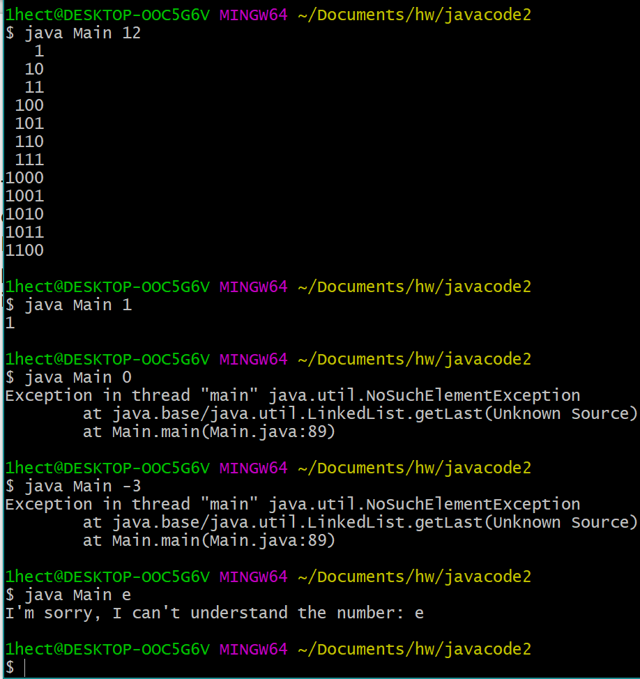
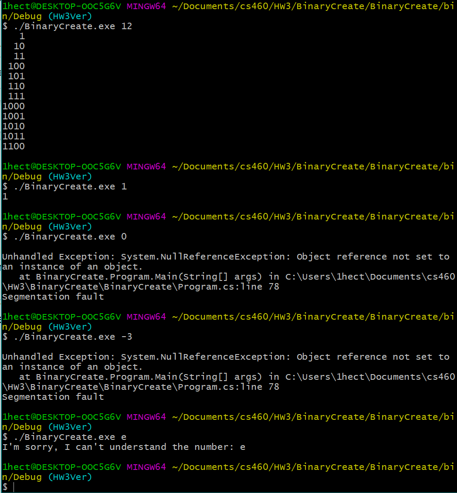

The goal of this assignment is to translate the code of a java file into a C# file. The file must follow C# standards, must be properly commented, and should run the same as the java when executed. Assignement details and code for the java file can be found here.
The first thing we had to do was to download and install the visual studio IDE. I already had it on my laptop from over a year ago when I was trying to learn to make Unity games and installed visual studio to write C# files. That saved me some time. My experience using C# wasn't that amazing considering I just learned what I needed at the time and I didn't have much of a foundation.
I dont have a whole lot of experience with java but I have learned it a while back on my own so reading the code shouldn't be much trouble. Looking at the java code it doesn't look like there is a whole lot that will be different in the C# file. Most of the file are pretty simple and straightforward. The Main file is probably the only part that requires a bit of thinking to understand but it isn't that bad either. I will largely take note of differences that will need to be resolved in translating the file.
All the work in this assignment has to be done in a new branch so I will quickly create one and check it out with the commands:
Cd cs460
Git branch HW3Ver
Git checkout HW3Ver
Note that I will merge this branch back into the master branch in the end with the command(while in master branch):
git merge HW3Ver
The big difference here was just setting up a property to get and set the data variable, which was changed to private. The code is pretty simple and accessing data is as easy as calling the "Data" instead of directly with "data".
The big difference here was the file name change. In C# it was more proper to start interfaces with "I".
Some differences that I came across where how to extend a class. They didn't have much of a difference with C# using a “:” instead of an “extends”. Calling the extended classes constructor was also a bit different with a different keyword and location to place it.
This file had a difference in implementing an interface by using “:” instead of “implements”. Another thing that I learned was the difference in exception types (or names of them) from java and C#. I had to look up a list of exception of C# to know what was available to use. This site was usefull in figuring out which to use: https://www.developerfusion.com/article/1889/exception-handling-in-c/3/. I also noticed that in c# you can’t set a generic type to null unlike in java. This solution involved just setting the variable to default(type) instead of a null value. Like this:
T tmp = default(T);
The first thing to note is that the file that was first generated by visual studio ended up being called Program instead of main so the file names ended up changing. One thing that was slightly different was the method names in their built in linked list. I also noticed that I couldn't find a method to directly return the element of the last node (like in the java code) but instead had to access the last node and had to access the element from there. I used this site as a reference for C# linkedlist: https://docs.microsoft.com/en-us/dotnet/api/system.collections.generic.linkedlist-1?view=netframework-4.7.2 Here is the diff:
int maxLength = output.Last.Value.Length; //C#
Vs
int maxLength = output.getLast().length(); //Java
Then there was a couple small syntaxial difference like using Console.WriteLine() instead of System.out.println() to outputted in command line and name changes that aren't really worth mentioning considering how trivial they are.
Some general things that were noted were xml comments for classes and functions. This was done by typing “///” a line above from the target. Then I just filled out the areas with descriptions of the specified area.
When it came to running the java program I first entered “javac Main.java” and then “java Main #” in the command line,where # is the input number Here are a few test runs from running the java program:
To run the C# program i first looked for the .exe file created by visual studio and then on the command line I enter “./CreateBinary.exe #” where # is the input number. Here are a few test runs from running the C# program with the same values as the java program:
